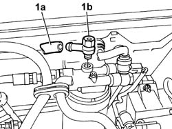
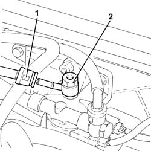

1044B16 delivery adjustment valve - r r
- Path
- Procedures > 10 ENGINE > 1044 FUEL CIRCUIT PUMP/AND DEVICES > 1044B fuel filters > 1044B16 delivery adjustment valve - r r
- Kind
- repair procedure (removal / refitting; the operation number is the code)
- Applies to
- engines: 1.9 JTD 8V, 1.9 JTD 16V; all production periods
- Interactive page
- https://sloeber94.github.io/elrnDB-a147/en/#/3025016
Applies to: engines: 1.9 JTD 8V; all production periods
 Removing
Removing
 Refitting
Refitting1. Undo the connection (1a) and undo connection (1b), with integrated adjustment valve, securing fuel filter supply pipe to the fuel return manifold pipe

Applies to: engines: 1.9 JTD 8V; all production periods
Refitting
RemovingTighten the connection, with integrated adjustment valve, securing fuel filter supply pipe to the fuel return manifold pipe
Applies to: engines: 1.9 JTD 16V; all production periods
Removing
RefittingProceed with removal 7025A12 Engine front sound insulation COVER - R.R. .
Proceed with removal 7025A14 Bonnet LID - R.R. .
Proceed with removal 1016A10 sound-proofing cover - r + r .
1. Disconnect the rapid attachment on the fuel return pipe to the fuel return manifold pipe, fuel filter side.
2. Undo the connector with the fuel supply/return adjustment valve incorporated.

Applies to: engines: 1.9 JTD 16V; all production periods
Refitting
RemovingTighten the connector with the fuel supply/return adjustment valve incorporated.
Connect the rapid attachment of the front fuel return pipe to the fuel return manifold pipe, fuel filter side.
Proceed with refitting 1016A10 sound-proofing cover - r + r .
Proceed with refitting 7025A14 Bonnet LID - R.R. .
Proceed with refitting 7025A12 Engine front sound insulation COVER - R.R. .
Topics linked from this page (3)
- 1016A10 sound-proofing cover - r + r
- 7025A12 Engine front sound insulation COVER - R.R.
- 7025A14 Bonnet LID - R.R.